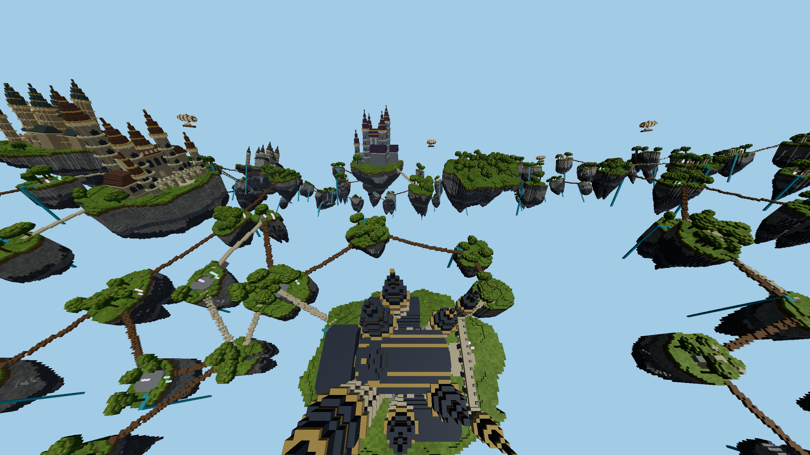

FIREFOX ONLY · AETHER ARCHIPELAGO · 28 OCTOBER 2026
Repair ownership seams,
then reduce redundant GPU uploads.
Measured results · Correctness · Images
All new terrain measurements use native Firefox and Aether Archipelago only. Actual framebuffer 2560 × 1440, no MSAA, 1 m cells, the same eight fixture zones (6.25% of the world), 8-chunk near radius and 576-chunk far radius. No geometry, visibility guard, shading quality or cache capacity was reduced.
Measured outcome
Moving map uploads fall from about 1,062 KiB to 79 KiB per frame, a 92.6% reduction. Moving FPS is about 80 with full uploads and 82 with incremental uploads. The repeated full-upload blocks range from 72.5 to 86.8 FPS, so this experiment establishes lower upload traffic, not a statistically demonstrated FPS gain.
Stationary and moving frame performance
Each run warms for 60 seconds, then measures dense/move/move/dense. Each block warms for 6 seconds and samples for 12 seconds. The dense camera uses 100° vertical FOV and 55° downward pitch. Movement uses the previous 6-second, 64 m × 32 m route. CPU and GPU spans overlap. The arena span is part of CPU time. Map KiB is scheduled upload volume per frame, not total GPU traffic.
The last run restores full map uploads with the repaired shader. This reference repeat helps distinguish upload savings from run-to-run drift. Firefox's approximately 120 Hz presentation ceiling limits interpretation of stationary FPS; two blocks per run are not a confidence interval. Near-pending fractions describe readiness states, not missing-screen percentages.
Correctness evidence
The original shader rounded world coordinates to chunk IDs at vertices, then interpolated those IDs. This can advance ownership halfway across a face and interpolate across the entire texture at a periodic seam. The repaired shader interpolates continuous coordinates before wrapping and rounding in the fragment stage.
All six GPU ownership probes match independent expected pixels after repair. The old shader fails five of them. The settled terrain captures differ at 1,685 pixels; 861 previously background-colored pixels now contain geometry. That count is an indicator, not a complete hole detector.
Incremental uploads retain a revision for the actual visible block list, plus its immediately previous page placement. Unchanged spans keep their GPU contents. Hidden/reappearing entries, shifted spans, changed storage and pending uploads are explicitly covered by regression tests. The optimized and full-upload paths produce identical RGBA pixels at the settled dense pose in both final runs.
This fixes the demonstrated coverage-mask defect. It does not establish pixel-identical reconstruction with Minecraft or prove that every possible LOD transition is artifact-free. Moving streaming readiness remains a separate performance and completeness issue.
Same pose, before and after
Open full-resolution images to inspect fine boundaries. Lighting and source data are unchanged; screenshots are captured outside timed samples.
 Original coverage / full maps
Original coverage / full maps
Corrected coverage / full maps Corrected coverage / incremental maps
Corrected coverage / incremental maps
Audit and reproduction
Summary and GPU probe · Validation · Reproduction